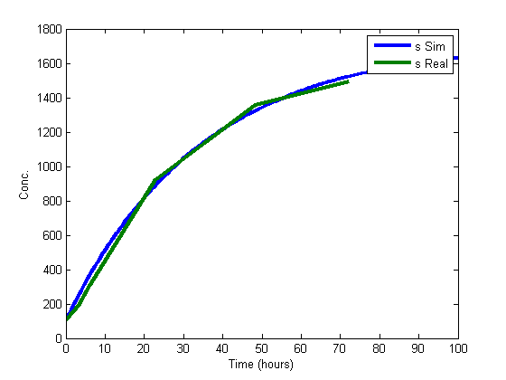

Contents
%%%%%%%%%%%%%%%%%%%%%%%%%%%%%%%%%%%%%%%%%%%%%%%%%%%%%%%%%%%%%%%%%%%%%%%%%%%% % Model Fitting IFFL with ODE45 % Sumit Mukherjee % % %%%%%%%%%%%%%%%%%%%%%%%%%%%%%%%%%%%%%%%%%%%%%%%%%%%%%%%%%%%%%%%%%%%%%%%%%%% clc; clear; close all;
Initialization
mRange = 'D152:D157'; sRange = 'D8:D13'; tRange = 'C8:C13'; pRange = 'D14:D19'; datFile = 'AlexIFFLdata.xls'; savName = 'IFFL_Alex_pv_FISH'; % Open loop data mORange = 'D146:D151'; sORange = 'D26:D31'; tORange = 'C26:C31'; pORange = 'D32:D37'; mDat = xlsread(datFile,mRange); sDat = xlsread(datFile,sRange); tDat = xlsread(datFile,tRange); pDat = xlsread(datFile,pRange); mODat = xlsread(datFile,mORange); sODat = xlsread(datFile,sORange); tODat = xlsread(datFile,tORange); pODat = xlsread(datFile,pORange);
Parameter Estimation for miRNA
xMin = [0 .02]; xMax = [500 .04]; % xMax = 1e3*ones(4,1); % phi = [am bm gs as bs]; x0 = [ 45 .03]; options=optimset('Algorithm','active-set','MaxFunEvals',1e6,'MaxIter',1e6,'TolCon',1e-9,'TolFun',1e-9,'TolX',1e-9); x = fmincon(@(x) model4sdat(x,sDat,tDat),x0,[],[],[],[],xMin,xMax,[],options); as = x(1); bs = x(2);
Local minimum possible. Constraints satisfied. fmincon stopped because the predicted change in the objective function is less than the selected value of the function tolerance and constraints are satisfied to within the selected value of the constraint tolerance. No active inequalities.
Parameter estimation for mRNA
yMin = [100 .01 0 0 .001]; yMax = [3000 .5 .001 5000 1]; y0 = [248 .19 3.2256e-4 45 .03]; y = fmincon(@(y) model4mpdat(y,sDat,mDat,pDat,tDat,as,bs),y0,[],[],[],[],yMin,yMax,[],options); am = y(1); bm = y(2); gs = y(3); ap = y(4); bp = y(5); % am = 248.5884; % bm = .185; % gs = 3.0256e-4;
Local minimum possible. Constraints satisfied.
fmincon stopped because the predicted change in the objective function
is less than the selected value of the function tolerance and constraints
are satisfied to within the selected value of the constraint tolerance.
Active inequalities (to within options.TolCon = 1e-09):
lower upper ineqlin ineqnonlin
3
Running ODE model
ap = 1.7186; bp = .03;
TLim = 100; x0 = [mDat(1); sDat(1); pDat(1)]; [Tout,Yout] = ode45(@(t,x) model2sdatcont(t,x,am,bm,gs,as,bs,ap,bp),[0 TLim],x0); figure(4) plot(Tout,Yout(:,1),tDat,mDat,'LineWidth',3); xlabel('Time (hours)'); ylabel('Conc.'); legend('m Sim','m Real'); figure(5) plot(Tout,Yout(:,2),tDat,sDat,'LineWidth',3); xlabel('Time (hours)'); ylabel('Conc.'); legend('s Sim','s Real'); figure(6) plot(Tout,Yout(:,3),tDat,pDat,'LineWidth',3); xlabel('Time (hours)'); ylabel('Conc.'); legend('p Sim','p Real'); mkdir(savName); saveas(4,strcat('.\',savName,'\model4mRNACont.jpg')); saveas(5,strcat('.\',savName,'\model4miRNACont.jpg')); saveas(6,strcat('.\',savName,'\model4pCont.jpg')); save(strcat('.\',savName,'\model4params'),'am','bm','gs','ap','bp','as','bs');
Warning: Directory already exists.
Optional Section (plotting open loop with current parameters)
TLim = 100; x0 = [mODat(1); sODat(1); pODat(1)]; [Tout,Yout] = ode45(@(t,x) model2sdatcont(t,x,am,bm,0,as,bs,ap,bp),[0 TLim],x0); figure(7) plot(Tout,Yout(:,1),tODat,mODat,'LineWidth',3); xlabel('Time (hours)'); ylabel('Conc.'); legend('m Sim','m Real'); figure(8) plot(Tout,Yout(:,2),tODat,sODat,'LineWidth',3); xlabel('Time (hours)'); ylabel('Conc.'); legend('s Sim','s Real'); figure(9) plot(Tout,Yout(:,3),tODat,pODat,'LineWidth',3); xlabel('Time (hours)'); ylabel('Conc.'); legend('p Sim','p Real'); mkdir(savName); saveas(7,strcat('.\',savName,'\model4mRNAopenCont.jpg')); saveas(8,strcat('.\',savName,'\model4miRNAopenCont.jpg')); saveas(9,strcat('.\',savName,'\model4popenCont.jpg'));
Warning: Directory already exists.
Optional Section (plotting open loop with updated parameters)
%parameter estimation for mRNA yMin = [100 bm 0 0 bp]; yMax = [3000 bm 0 5000 bp]; y0 = [248 bm 0 45 bp]; y = fmincon(@(y) model4mpdat(y,sODat,mODat,pODat,tODat,as,bs),y0,[],[],[],[],yMin,yMax,[],options); amo = y(1); bmo = y(2); gso = y(3); apo = y(4); bpo = y(5); % plotting TLim = 100; x0 = [mODat(1); sODat(1); pODat(1)]; [Tout,Yout] = ode45(@(t,x) model2sdatcont(t,x,amo,bmo,gso,as,bs,apo,bpo),[0 TLim],x0); figure(10) plot(Tout,Yout(:,1),tODat,mODat,'LineWidth',3); xlabel('Time (hours)'); ylabel('Conc.'); legend('m Sim','m Real'); figure(11) plot(Tout,Yout(:,2),tODat,sODat,'LineWidth',3); xlabel('Time (hours)'); ylabel('Conc.'); legend('s Sim','s Real'); figure(12) plot(Tout,Yout(:,3),tODat,pODat,'LineWidth',3); xlabel('Time (hours)'); ylabel('Conc.'); legend('p Sim','p Real'); % Saving stuff mkdir(savName); saveas(10,strcat('.\',savName,'\model4mRNAopenContUpdated.jpg')); saveas(11,strcat('.\',savName,'\model4miRNAopenContUpdated.jpg')); saveas(12,strcat('.\',savName,'\model4popenContUpdated.jpg')); save(strcat('.\',savName,'\model4paramsUpdated'),'amo','bmo','gso','apo','bpo','as','bs');
Local minimum possible. Constraints satisfied.
fmincon stopped because the predicted change in the objective function
is less than the selected value of the function tolerance and constraints
are satisfied to within the selected value of the constraint tolerance.
Active inequalities (to within options.TolCon = 1e-09):
lower upper ineqlin ineqnonlin
2 2
3 3
5 5
Warning: Directory already exists.